Project Overview
This project aims to explore the utilisation of Telstra's existing optical fibre footprint and technology to evaluate the usability of Fibre Optic Sensing for inferring the location and movements of vehicles on the road corridor in real time, providing data that can be used for C-ITS purposes or aggregated to make investment decisions.
The following traffic insights have been investigated with this technology:
- Vehicle Counting
- Vehicle Tracking
- Vehicle Speed Detection
- Vehicle Classification
- Ingress/Regress Vehicle Counting
Algorithm Architecture
Two different architectures are employed for vehicle position and speed tracking, as well as ingress/regress vehicle counting.
Algorithm 1
Vehicle Position and Speed Tracking, Vehicle Classification, Vehicle Counting
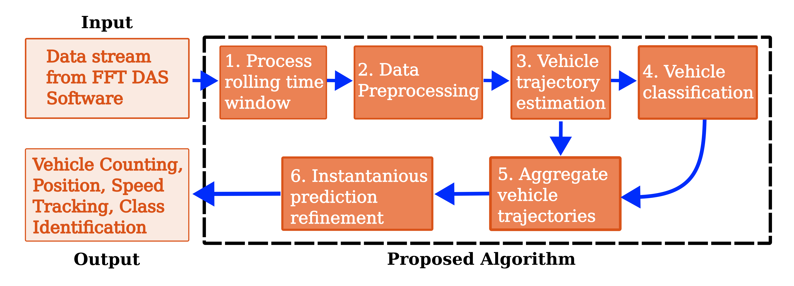
The complete algorithm used to track vehicle positions, speed, class identification and vehicle counting consists of six steps, as follows.
Step 1: Process Time Window
Data is processed through individual time window frames. This rolling time window is defined by two characteristics:
- Time window length defined in seconds
- Data capture interval defined in seconds
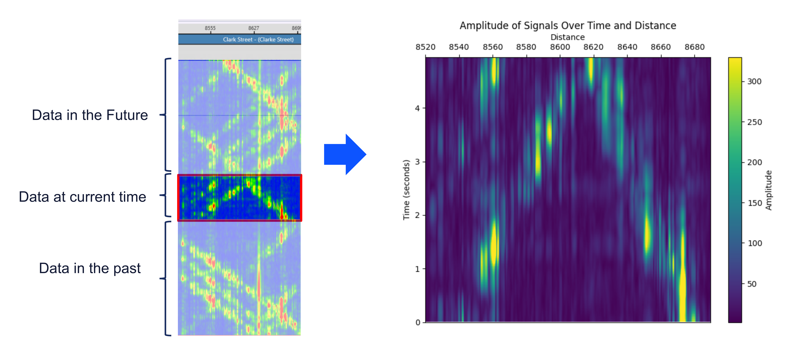
Step 2: Data Preprocessing
Standardisation is applied to highlight important data.
A segmentation mask is applied to remove noise:
- Data below the noise threshold is set to 0.
Weighted segmentation is applied by performing morphological transformation on the segmentation mask.
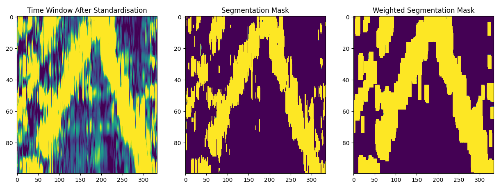
Cross correlation is then applied to the weighted segmentation mask to identify vehicle instances in a given time window.
Instances in the time window which closely match the lookup array will have higher correlation. The correlation matrix is used to distinguish vehicle instance points from noise.
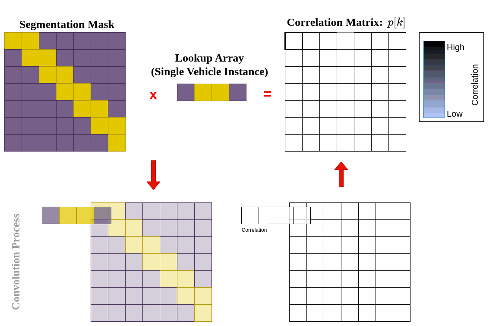
Step 3: Vehicle Trajectory Estimation
Using vehicle points from the cross-correlation matrix:
- The algorithm iteratively creates trajectories for each entry/exit point in the time window.
- The algorithm chooses the appropriate trajectory by calculating the maximum number of vehicle points along the given trajectory.
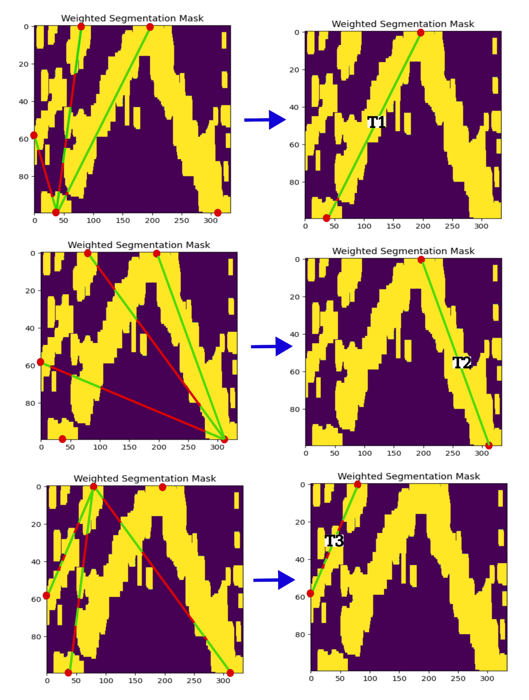
Step 4: Vehicle Classification
Feature extraction is conducted after the vehicle trajectory is estimated in a given time window.
Statistical features are extracted along the estimated trajectory as well as parallel trajectories.
A wide range of statistical features are extracted along the length of each trajectory. These include:
- Mean Amplitude: The average value of the vibration signal amplitudes.
- Standard Deviation (Std Dev) Amplitude: The measure of dispersion or spread of the vibration signal amplitudes around the mean.
- Skewness Amplitude: The measure of asymmetry of the distribution of vibration amplitudes.
- Kurtosis Amplitude: The measure of "peakness" or flatness of the vibration amplitude distribution.
- Entropy Amplitude: The measure of randomness or uncertainty in the vibration amplitude distribution. This could be useful in distinguishing noise and/or pedestrians.
- Autocorrelation: The measure of similarity between a signal and a delayed version of itself.
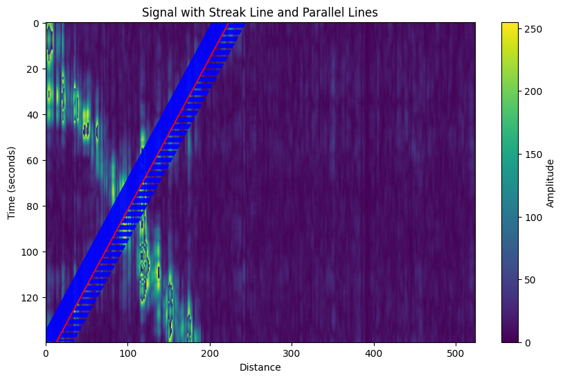
A trained five-class model is used to classify the detected signal into one of the following classes:
- Heavy
- Medium
- Light
- Pedestrian
- Noise
Step 5: Aggregate Vehicle Trajectories
Once the trajectories in each frame are identified, the trajectories are tracked from frame to frame to construct the complete vehicle trajectory across time frames.
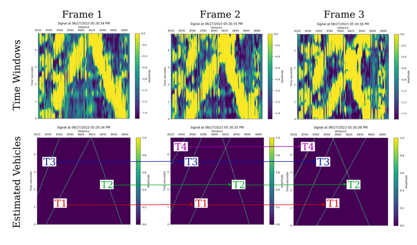
Step 6: Prediction Refinement
Finally, the speed predictions of each frame are refined using the Weighted Moving Average Filter.
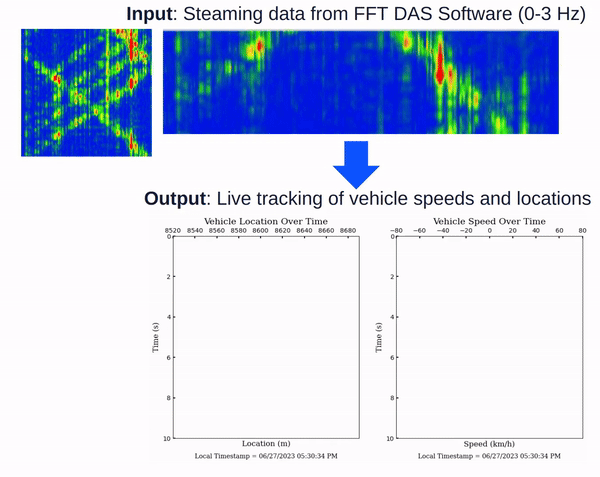
Algorithm 2
Perpendicular Vehicle Crossing, Ingress/Regress Counting
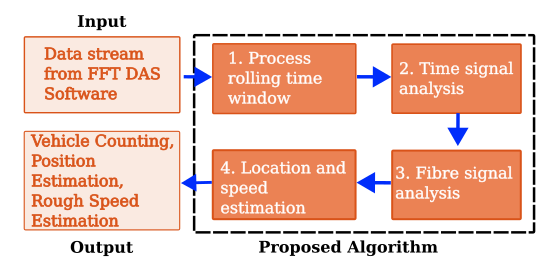
Similar to the first algorithm, this algorithm processes a rolling time window and performs analysis across the time length and fibre length of the time window frame to:
- Count the number of vehicles crossing the fibre.
- Estimate the position at which the vehicle crosses the fibre.
- Estimate the speed range at which the vehicle crosses the fibre.
Detected Vehicle Attributes
The following attributes are detected for each vehicle:
- Vehicle crossing time: This is taken as the time at which the maximum intensity is detected along the time axis.
- Vehicle crossing time range: This is the time range in which the vehicle signal is observed.
- Vehicle crossing position: This is the position along the fibre, in metres, at which the vehicle crosses the fibre. This is taken as the maximum intensity detected along the fibre length.
- Vehicle crossing direction: This is the direction in which the vehicle is travelling relative to the fibre. This is estimated based on the crossing position of the vehicle along the fibre.
- Vehicle speed range: The estimated lower and upper speed range of the vehicles. An average vehicle length is taken as 4.9 to 7.5 metres. Given the estimated vehicle crossing time range, the lower and upper bounds of speed are calculated.
Step 2: Time Signal Analysis
The average intensity of detected signals is analysed over time for vehicle counting and identification.
The algorithm detects isolated peaks along the time domain, resulting in dynamic thresholds, given that a signal peak is above the noise floor threshold.
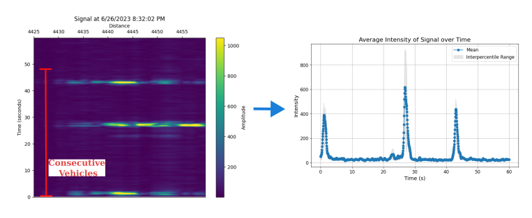
Step 3: Fibre Signal Analysis
The average intensity of detected signals is also analysed over the length of the fibre to estimate the vehicle position along the fibre.
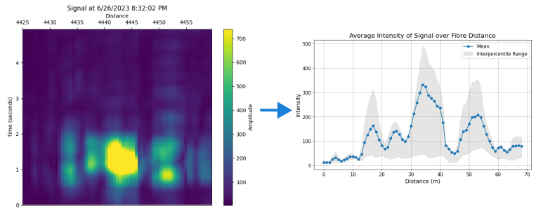